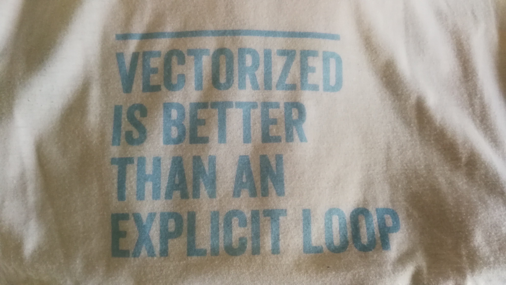
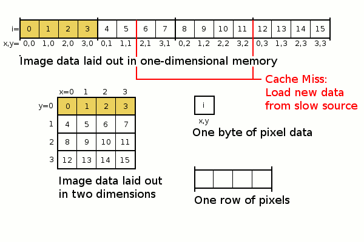
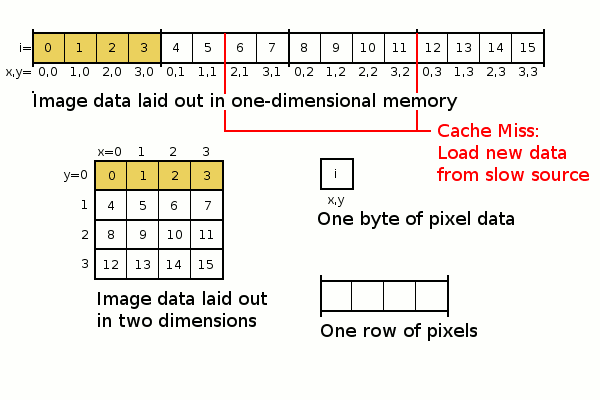

Vectorized Computation using Numpy¶
We have just learned about the logical set-up of a computer and which factors affect the performance of it. Keeping this in mind, we will learn how we can improve the performance of our code in Python.
https://pandas.pydata.org/pandas-docs/stable/user_guide/basics.html#accelerated-operations
1. Vectorization¶
The motto of the EuroSciPy Conference 2018 was: “Vectorized is better than an explict loop”

What does that mean? Let’s take a look back at the logical setup of a computer.

Example: We want to add the values of two lists of integers. How would you do this?
[1]:
values1 = [1,2,3,4]
values2 = [5,6,7,8]
[2]:
[values1[0] + values2[0], values1[1] + values2[1]]
[2]:
[6, 8]
[3]:
%%timeit
result = []
for v1, v2 in zip(values1, values2):
#v_sum =
#print(v1, v2, v_sum)
result.append(v1 + v2)
663 ns ± 17.3 ns per loop (mean ± std. dev. of 7 runs, 1000000 loops each)
Exercise: Let’s try this with bigger data. Create a list of integers of length 100.
[4]:
nvals = 1000
values1 = list(range(0, nvals))
values2 = list(range(0, nvals))
[5]:
def loop_sum(values1, values2):
result = []
for v1, v2 in zip(values1, values2):
result.append(v1 + v2)
return result
[6]:
%%timeit
res = loop_sum(values1, values2)
110 µs ± 3.67 µs per loop (mean ± std. dev. of 7 runs, 10000 loops each)
Numpy for vectorized computations¶
Numpy is a library that introduces vectorized computations in Python.
[7]:
import numpy as np
[8]:
values1[0:10]
[8]:
[0, 1, 2, 3, 4, 5, 6, 7, 8, 9]
[9]:
np_values1 = np.array(values1)
np_values2 = np.array(values2)
[10]:
type(np_values2)
[10]:
numpy.ndarray
You can extract certain values by indexing it just like with lists.
[11]:
np_values1[0]
[11]:
0
Let’s implement the function above using numpy
[12]:
def vectorized_sum(vals1, vals2):
# alternativ geht auch
#return vals1 + vals2
return np.add(vals1, vals2)
[13]:
%%timeit
res = vectorized_sum(np_values1, np_values2)
1.05 µs ± 44.3 ns per loop (mean ± std. dev. of 7 runs, 1000000 loops each)
Compare the execution times of “loops” vs. “vectorized” function¶
[14]:
loop_times = []
vectorized_times = []
length_of_list = []
for exponent in range(0, 10, 1):
nvals = 2 ** exponent
length_of_list.append(nvals)
values1 = list(range(0, nvals))
values2 = list(range(0, nvals))
np_values1 = np.array(values1)
np_values2 = np.array(values2)
result = %timeit -o loop_sum(values1, values2)
loop_times.append(result.average)
result = %timeit -o vectorized_sum(np_values1, np_values2)
vectorized_times.append(result.average)
469 ns ± 19.2 ns per loop (mean ± std. dev. of 7 runs, 1000000 loops each)
553 ns ± 6.39 ns per loop (mean ± std. dev. of 7 runs, 1000000 loops each)
540 ns ± 16.1 ns per loop (mean ± std. dev. of 7 runs, 1000000 loops each)
598 ns ± 23.9 ns per loop (mean ± std. dev. of 7 runs, 1000000 loops each)
737 ns ± 6.19 ns per loop (mean ± std. dev. of 7 runs, 1000000 loops each)
577 ns ± 27.1 ns per loop (mean ± std. dev. of 7 runs, 1000000 loops each)
1.12 µs ± 23 ns per loop (mean ± std. dev. of 7 runs, 1000000 loops each)
566 ns ± 5.9 ns per loop (mean ± std. dev. of 7 runs, 1000000 loops each)
1.88 µs ± 17.6 ns per loop (mean ± std. dev. of 7 runs, 1000000 loops each)
565 ns ± 6.77 ns per loop (mean ± std. dev. of 7 runs, 1000000 loops each)
3.35 µs ± 59.7 ns per loop (mean ± std. dev. of 7 runs, 100000 loops each)
565 ns ± 5.89 ns per loop (mean ± std. dev. of 7 runs, 1000000 loops each)
6.75 µs ± 367 ns per loop (mean ± std. dev. of 7 runs, 100000 loops each)
618 ns ± 19.6 ns per loop (mean ± std. dev. of 7 runs, 1000000 loops each)
13.8 µs ± 297 ns per loop (mean ± std. dev. of 7 runs, 100000 loops each)
724 ns ± 41.7 ns per loop (mean ± std. dev. of 7 runs, 1000000 loops each)
27.5 µs ± 769 ns per loop (mean ± std. dev. of 7 runs, 10000 loops each)
728 ns ± 24.7 ns per loop (mean ± std. dev. of 7 runs, 1000000 loops each)
57.2 µs ± 2.95 µs per loop (mean ± std. dev. of 7 runs, 10000 loops each)
873 ns ± 50.8 ns per loop (mean ± std. dev. of 7 runs, 1000000 loops each)
[56]:
import matplotlib.pyplot as plt
[58]:
plt.plot(length_of_list, loop_times)
plt.plot(length_of_list, vectorized_times)
plt.legend(["for", "vectorized"])
plt.title("Average execution times")
plt.xlabel("Length of list/array")
plt.ylabel("Execution time")
[58]:
Text(0, 0.5, 'Execution time')
Take-Home Message¶
Try to get rid of for loops!
When ever you are performing the same calculation on multiple data, use vectoried functions! Numpy is a very powerful library for that and has many functions implemented in a very efficient way, partly in C.
Vectorization in Pandas¶
Remeber that the package Pandas is built on Numpy. So every Pandas.DataFrame is basically a numpy.array with additional row and column anmes.
[15]:
import pandas as pd
[19]:
df = pd.DataFrame({"pop": [1,2,3,4,5,6,7,5,4,6,78,44,5,33,5,6,7],
"area": [1,2,3,4,5,6,7,5,4,6,78,44,5,33,5,6,7]})
[39]:
type(df)
[39]:
pandas.core.frame.DataFrame
[ ]:
df
Intuitively you might want to use a for loop to iterate over the rows. Something like this:
[31]:
%%timeit
for i, d in df.iterrows():
d["pop"] * d["area"]
1.31 ms ± 4.52 µs per loop (mean ± std. dev. of 7 runs, 1000 loops each)
This is however a bad idea, because you are not making use of the built-in vectorized functions provided by numpy:
[32]:
%%timeit
df["pop"] * df["area"]
116 µs ± 1.42 µs per loop (mean ± std. dev. of 7 runs, 10000 loops each)
Using the vectorized calculation, the execution is 10 times faster!
For more complex functions you will have use the .DataFrame.apply or Series.map methods.
[60]:
df.loc[1, "pop"] = np.nan
[61]:
df.apply(lambda x: -99 if np.isnan(x["pop"]) else x["pop"] * x["area"], axis=1)
[61]:
0 1.0
1 -99.0
2 9.0
3 16.0
4 25.0
5 36.0
6 49.0
7 25.0
8 16.0
9 36.0
10 6084.0
11 1936.0
12 25.0
13 1089.0
14 25.0
15 36.0
16 49.0
dtype: float64
[62]:
%%timeit
df.apply(lambda x: 0 if np.isnan(x["pop"]) else x["pop"] * x["area"], axis=1)
1.27 ms ± 70.3 µs per loop (mean ± std. dev. of 7 runs, 1000 loops each)
However there is still an overhead involved when using pandas.DataFrames compared to numpy.array, since the metadata (e.g. index, columns, dtype) of the data frame have to be stored as well. When setting raw=True the apply as applied to a numpy array instead of the series. This means the column names are gone but it is a lot faster.
[67]:
%%timeit
df.apply(lambda x: -99 if np.isnan(x[0]) else x[0] * x[1], axis=1, raw=True)
1.29 ms ± 13.7 µs per loop (mean ± std. dev. of 7 runs, 1000 loops each)
Resources¶
3. Vectorization in GeoPandas¶
[1]:
import pygeos
[2]:
import geopandas as gpd
[3]:
gpd.use_pygeos = False
iterate over features
[ ]:
2. Basics of Numpy¶
[ ]:
Generating Numpy Arrays¶
[17]:
values = np.arange(0, 10, 1, dtype="int16")
values
[17]:
array([0, 1, 2, 3, 4, 5, 6, 7, 8, 9], dtype=int16)
[18]:
ndzeros = np.zeros(10)
ndzeros
[18]:
array([0., 0., 0., 0., 0., 0., 0., 0., 0., 0.])
[19]:
ndone = np.ones(10)
ndone
[19]:
array([1., 1., 1., 1., 1., 1., 1., 1., 1., 1.])
[20]:
random_ints = np.random.randint(0, 100, 10)
random_ints
[20]:
array([26, 2, 8, 83, 59, 80, 55, 19, 30, 72])
[21]:
random_float = np.random.random(10)
random_float
[21]:
array([0.22550162, 0.19518921, 0.18987695, 0.98540563, 0.62319535,
0.86390692, 0.44673619, 0.63848026, 0.19672036, 0.22730732])
Slicing an Array = Extracting a range of values from a numpy array¶
[22]:
values
[22]:
array([0, 1, 2, 3, 4, 5, 6, 7, 8, 9], dtype=int16)
[23]:
values[5:]
[23]:
array([5, 6, 7, 8, 9], dtype=int16)
[24]:
values[:-2]
[24]:
array([0, 1, 2, 3, 4, 5, 6, 7], dtype=int16)
[25]:
values[::2]
[25]:
array([0, 2, 4, 6, 8], dtype=int16)
Replacing values
[26]:
values[1] = 99
values
[26]:
array([ 0, 99, 2, 3, 4, 5, 6, 7, 8, 9], dtype=int16)
[27]:
values[:2] = [88, 88]
values
[27]:
array([88, 88, 2, 3, 4, 5, 6, 7, 8, 9], dtype=int16)
[28]:
values > 5
[28]:
array([ True, True, False, False, False, False, True, True, True,
True])
[29]:
values[values > 5] = 5
values
[29]:
array([5, 5, 2, 3, 4, 5, 5, 5, 5, 5], dtype=int16)
Vectorized Calculations¶
[30]:
random_ints2 = np.random.randint(0, 100, 10)
result = random_ints * random_ints2
result
[30]:
array([2262, 152, 520, 4150, 3363, 6080, 1265, 1235, 1290, 3384])
np.array([1,2,3]).min()
Multi-Dimensional Arrays¶
Numpy array can also be multidimensional. A 2D array with 10 rows and 5 columns can be created like this using the reshape() function.
[31]:
arr1D = np.arange(0, 50, 1)
arr1D
[31]:
array([ 0, 1, 2, 3, 4, 5, 6, 7, 8, 9, 10, 11, 12, 13, 14, 15, 16,
17, 18, 19, 20, 21, 22, 23, 24, 25, 26, 27, 28, 29, 30, 31, 32, 33,
34, 35, 36, 37, 38, 39, 40, 41, 42, 43, 44, 45, 46, 47, 48, 49])
[32]:
arr2D = arr1D.reshape(10, 5)
arr2D
[32]:
array([[ 0, 1, 2, 3, 4],
[ 5, 6, 7, 8, 9],
[10, 11, 12, 13, 14],
[15, 16, 17, 18, 19],
[20, 21, 22, 23, 24],
[25, 26, 27, 28, 29],
[30, 31, 32, 33, 34],
[35, 36, 37, 38, 39],
[40, 41, 42, 43, 44],
[45, 46, 47, 48, 49]])
[33]:
arr2D = np.arange(0,50, 1).reshape(10, 5)
arr2D
[33]:
array([[ 0, 1, 2, 3, 4],
[ 5, 6, 7, 8, 9],
[10, 11, 12, 13, 14],
[15, 16, 17, 18, 19],
[20, 21, 22, 23, 24],
[25, 26, 27, 28, 29],
[30, 31, 32, 33, 34],
[35, 36, 37, 38, 39],
[40, 41, 42, 43, 44],
[45, 46, 47, 48, 49]])
[34]:
import matplotlib.pyplot as plt
[35]:
plt.imshow(arr2D)
plt.colorbar()
[35]:
<matplotlib.colorbar.Colorbar at 0x11faa1518>
[36]:
arr2D.shape
[36]:
(10, 5)
[37]:
arr2D[1:3,1:2]
[37]:
array([[ 6],
[11]])
[38]:
arr2D.mean(axis=1)
[38]:
array([ 2., 7., 12., 17., 22., 27., 32., 37., 42., 47.])
Numpy Exercises:¶
Let’s do some exercises to get familiar with Numpy. If you don’t know the required function, type np. and press TAB to display availabel functions. If you have found the right function, but you don’t know the required parameters, check the docstring of the function by putting the cursor on the function name and press SHIFT + Tab to get the docstring.
You can find the solutions and a lot more numpy exercises in thisrepo.
1. Create a vector with values ranging from 10 to 49
[ ]:
2. Calculate the square root of each element of the array above.
[ ]:
3. Create a null vector of size 10 but the fifth value which is 1.
[ ]:
4. Create a random vector of size 30 and find the minimum and maximum value.
[ ]:
5. Bonus: Create a 3x3 matrix with values ranging from 0 to 8. Hint: Take a look at np.reshape()
[ ]:
6. Bonus: Create a 10x10 array with random values and find the mean value of each row.
[ ]:
7. What are the results of the following expressions?
[39]:
#print(0 * np.nan)
#print(np.nan == np.nan)
#print(np.inf > np.nan)
#print(np.nan - np.nan)
#print(np.nan in set([np.nan]))
#print(0.3 == 3 * 0.1)
8. Create a 8x8 matrix and fill it with a checkerboard pattern
[ ]:
9. What is the output of print(b[0, 0], b[0, 1], b[1, 0])?
[40]:
b = np.array([[1, 2, 3], [4, 5, 6]])
print(b.shape)
(2, 3)
3. Spatial Locality¶
A puzzling problem¶
Example: Let’s create an 2 dimensional array with random numbers with 10000 rows and 10000 columns. Then we calculate the mean along the rows and along the columns. We will measure the computation time of each cell using the magic command %%timeit. What do you observe? Can you explain the result?
[8]:
import numpy as np
[9]:
arr_big = np.random.random(100000000).reshape(10000, 10000)
[10]:
%%timeit
np.mean(arr_big, axis=0)
78.4 ms ± 4.36 ms per loop (mean ± std. dev. of 7 runs, 10 loops each)
[11]:
%%timeit
np.mean(arr_big, axis=1)
55.4 ms ± 2.04 ms per loop (mean ± std. dev. of 7 runs, 10 loops each)
Looking at the way arrays are stored in pyhsical memory might help us explain this phenomenon.


 

By default numpy arrays are stored in C order (row-major), not in F order (column-major). Therefore, calculations along the rows (axis=1) are faster than along the columns (axis=0). So calculating the mean of each row is faster than the mean of each column if the numpy array is stored as default in C order.
[12]:
arr2D = np.arange(0, 50, 1).reshape(10, 5)
[13]:
arr2D.shape
[13]:
(10, 5)
A multi-dimensional array can be converted to a 1D array using the function ravel() with the option to specify C or F order.
[14]:
arr2D
[14]:
array([[ 0, 1, 2, 3, 4],
[ 5, 6, 7, 8, 9],
[10, 11, 12, 13, 14],
[15, 16, 17, 18, 19],
[20, 21, 22, 23, 24],
[25, 26, 27, 28, 29],
[30, 31, 32, 33, 34],
[35, 36, 37, 38, 39],
[40, 41, 42, 43, 44],
[45, 46, 47, 48, 49]])
[15]:
arr2D.ravel()
[15]:
array([ 0, 1, 2, 3, 4, 5, 6, 7, 8, 9, 10, 11, 12, 13, 14, 15, 16,
17, 18, 19, 20, 21, 22, 23, 24, 25, 26, 27, 28, 29, 30, 31, 32, 33,
34, 35, 36, 37, 38, 39, 40, 41, 42, 43, 44, 45, 46, 47, 48, 49])
[16]:
arr2D.ravel(order="F")
[16]:
array([ 0, 5, 10, 15, 20, 25, 30, 35, 40, 45, 1, 6, 11, 16, 21, 26, 31,
36, 41, 46, 2, 7, 12, 17, 22, 27, 32, 37, 42, 47, 3, 8, 13, 18,
23, 28, 33, 38, 43, 48, 4, 9, 14, 19, 24, 29, 34, 39, 44, 49])
Advanced: Numpy Strides¶
“Strides are the number of bytes to jump-over in the memory in order to get from one item to the next item along each direction/dimension of the array. In other words, it’s the byte-separation between consecutive items for each dimension.” Stack Overflow
Example: For an array of size 10(cols) * 5(rows) stored in C order this would be:
column stride: 64bits * 5 cells / 8 bits = 40 bytes
row stride: 64bits * 1 cell / 8 bits = 8 bytes
[49]:
arr2D.strides
[49]:
(40, 8)
[50]:
np.asfortranarray(arr2D).strides
[50]:
(8, 80)
Exercise:¶
Calculate the strides for an F ordered array with 35 columns and 14 rows by hand and then check result using numpy.
[ ]:
FYI: Lists and spatial locality¶
Arrays are better than lists for continous reading of data, because lists usually only store pointers to variables stored in memory, not the variable values themselves. This can lead to bad spatial locality when reading the data, because the data might be spread all over the memory.
Dtypes of ndarray and how their sizes change¶
Working with raster data can be very memory intensive especially if you are working with time series analysis. By default a new numpy array has the type float 64bit. Oftentimes this is more than you really need. Therefore, you should choose the data types of your numpy arrays wisely!
[17]:
arr = np.random.random(100).reshape(10, 10)
arr.dtype
[17]:
dtype('float64')
[26]:
zeros = np.zeros(100)
zeros.dtype
[26]:
dtype('float64')
Exercise: Print the data type (.dtype) and the size in number of bytes (.nbytes) of the array.
[27]:
arr.dtype
[27]:
dtype('float64')
[24]:
arr.nbytes
[24]:
800
Exercise: Convert the arr to 16 bit integer (“int16”) using the method .astype() and print the size of the variable again.
[35]:
arr = arr.astype("int16")
[36]:
arr.nbytes
[36]:
200
Exercises:¶
__1. How big is an array of size 1000*1000 with these data types in Python in Megabytes?__ 1. Bool 2. 8 bit integer 3. 32 bit float 4. 64 bit float
[ ]:
2. Create an array of size 1000 * 1000 filled with zeros. Calculate its size in Megabytes and check the data type. Can you make it more memory efficient?
[ ]:
Summary¶
You should be able now to explain the sentence “vectorized is better than an explicit loop”.
When performing calculations you should also consider the way the arrays are stored in memory (row or column major).
For more on numpy, check out https://github.com/mingrammer/cs231n-numpy-tutorial/blob/master/numpy_tutorial.ipynb
Generally, the book by Schmidt, B. et al. (2017) Parallel programming: concepts and practice is a very good source for learning more about the numpy and efficient computation.
References:¶
Micha Gorelick, Ian Ozsvald. High Performance Python. O’Reilly, 2014. (Safari Books) (very good)
Schmidt, B., Gonzalez-Dominguez, J., Hundt, C., & Schlarb, M. (2017). Parallel programming: concepts and practice. Morgan Kaufmann. Google Books
Spatial locality explained: http://www.tophatstuff.co.uk/index.html@p=119.html
[ ]: